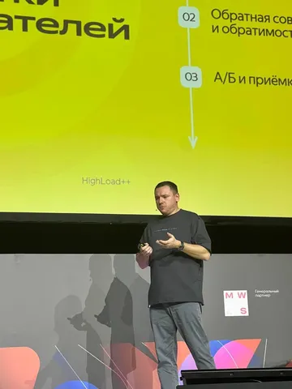

На прошлой неделе в Москве прошла конфа Highload++. И я там был, кофе-кейтеринг пил, по усам текло... А, не, не то.
Прошло, на мой взгляд, хорошо. Организация на площадке - отличная. Подготовка - на уровне. Аудитория - супер. ПК и волонтеры - лапочки.
Некоторое недоумение вызывала площадка - Технопарк Сколково для таких ивентов подходит, имхо, не идеально. Но оргам удалось из площадки выжать максимум удобства. Хотя многие залы были устроены плохо.
Чего, на мой взгляд, не хватало - так это какой-то отдельной зоны нетворкинга. Потому что на большой площадке с огромным количеством народу порой решительно непонятно, кто из гостей в моменте открыт к нетворкингу, а кто просто спешно доедает сендвич, чтобы побежать на доклад, который вот-вот начнется. Нужна зона с табличкой "готов поболтать".
Мой доклад был последним во второй день конференции, притом в главном зале, непосредственно перед церемонией закрытия. Я тешу себя иллюзиями, что я, таким образом, был эдаким хэдлайнером конференции (хотя на деле это, конечно же, не так). Кажется, выступил неплохо, но оценки будут доступны позже.
Спасибо организаторам за возможность, спасибо аудитории за внимание, спасибо неравнодушным за вопросы. Приятно, что люди после выступления подходили и интересовались темой, и даже писали потом в личку. Чувствуешь, что все было не зря. Когда (если?) будет видеозапись в доступе - поделюсь.
А вообще, выступать на конференциях - это классно. Спикер прокачивает навыки, аудитория получает контент. Даже если вам кажется, что ваш контент очевиден и не нов - всегда найдутся те, кому это было полезно. Главное, при подготовке доклада - почаще задумывайтесь над вопросом "а что слушатель может забрать с собой и как применить у себя", чтобы доклад не превращался в выставку достижений народного хозяйства в духе "смотрите, как я могу".
